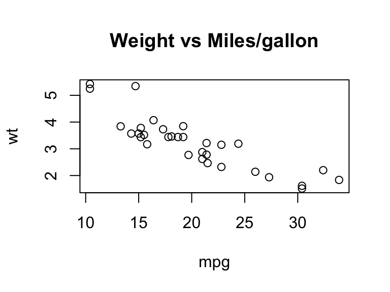

Importation et exportation de données (package readr)
Manipulation de tables de données (package dplyr)
Statistiques : quelques exemples avec dplyr
Visualisation de Données
Représentations graphiques (package ggplot2)
Cartographie (package leaflet)
Fonctions
Ecriture de fonctions avec dplyr
Fonctions spécifiques à l’analyse de données
Gestion des sorties sous forme de listes
Rapports et Présentations
Rappels sur R Markdown
Rédaction de rapports et de présentations
Applications Web
Rappels sur R Shiny
Tableaux de bord (package shinydashboard)
Conception d’une application avec interface utilisateur
Installation de R et RStudio en local
Télécharger la dernière version de R adaptée à votre système d’exploitation (Windows, Mac OS, Linux) via le CRAN de l’université de Lyon : https://pbil.univ-lyon1.fr/CRAN/
Télécharger la dernière version de RStudio adaptée à votre système d’exploitation (Windows, Mac OS, Linux) via le site rstudio : https://rstudio.com/products/rstudio/download/
Installer les 2 logiciels en éxécutant les fichiers téléchargés.
Attention RStudio est une interface graphique très évoluée pour une utilisation simplifiée du logiciel R. L’installation de R au préalable est donc indispensable avant toute utilisation de RStudio.
L’installation des librairies (ou packages) peut se faire directement via la console, ou via l’interface de RStudio.
Serveur RStudio
Serveur dédié à l’utiliation de R, dont la dernière version y est installée, avec toutes les librairies régulièrement mises à jour.
Connexion sur l’interface RStudio directement via la connexion sur le serveur.
Serveur RStudio de l’IUT (disponible uniquement en local, i.e. sur les ordinateurs de l’IUT) : hhtp://rstudio.iutparis.local:8787/
Première connexion : login et mot de passe = login de l’IUT.
Changer immédiatement votre mot de passe (voir le mail de M. Jollois).
Introduction
R :
langage de programmation pour le traitement des données
fonctions propres intégrées au langage
nombreuses librairies
tidyverse :
ensemble de librairies développées par l’équipe de R Studio
librairies principalement utilisées dans ce cours : magrittr, tibble, dplyr, readr, readxls, ggplot2
Data frames :
format des données dans R
observations (=individus) en lignes et variables en colonnes
tibble :
format tbl_df basé sur un data.frame
traitement identique aux data.frame
Conseils :
préférer les librairies développées par des laboratoires ou des entreprises (mises à jour susceptibles d’être plus régulières)
écrire et sauvegarder ses codes dans un script R ou R Studio
se référencer à l’aide pour l’utilisation des fonctions
cyl carb
Min. :4.000 Min. :1.000
1st Qu.:4.000 1st Qu.:2.000
Median :6.000 Median :2.000
Mean :6.188 Mean :2.812
3rd Qu.:8.000 3rd Qu.:4.000
Max. :8.000 Max. :8.000
Donner la liste des différentes espèces d’iris dans la table iris
Sélectionner
les 60 premiers iris de la table
les 50 derniers iris de la table
1 iris sur 10 dans la table
Sélectionner les iris ayant les plus longues Sépales et les plus longues Pétales. En donner la répartition par espèce.
Créer une nouvelle table en organisant la table iris par ordre alphabétique des espèces et par ordre croissant des longueurs de Sépale
Créer une nouvelle table en ajoutant 2 colonnes à la table iris contenant respectivement les rapports longueur/largeur de Sépale et de Pétale
Importer les 4 tables concernant les indicateurs de gouvernance fournis par la banque mondiale, WGIValues.csv, WGICountry.csv, WGISerie.csv et WGIType.csv
Créer une nouvelle table contenant les noms des pays, séries et indicateurs à la place des codes correspondants
Données spécifiques
Gestion de chaînes de caractères (package stringr) :
Calculer des périodes en secondes ou en années (par défaut en jours) :
bday =ymd("19771114")diff = today - bdaydiff
Time difference of 16434 days
as.period(diff)
[1] "16434d 0H 0M 0S"
as.duration(diff)
[1] "1419897600s (~44.99 years)"
TP : Exercice 3 (avec tibble, dplyr, stringr)
Afficher le jeu de données starwars (package dplyr)
Donner le nombre total de personnages distincts apparaissant dans les trilogies “Star Wars” (indication : nrow)
Donner le pourcentage de valeurs manquantes par variable (indication : is.na, colSums)
Faire de même avec les personnages (indication : rowSums)
Lister les différentes races des personnages de la table starwars. Combien de races apparaissent dans les trilogies “Star Wars” ?
Donner le nombre de personnages dans chaque race, en triant par ordre décroissant de ce nombre
Choisir 2 races pour lesquelles on dénombre plus de 2 personnages et donner le nom de ces personnages. Quels sont les personnages dont la race est indéfinie ? (indication : is.na)
Optionnel : donner les noms des personnages ayant changé de couleur de cheveux (indication : regarder la variable hair_color et utiliser la librairie stringr)
Optionnel : quels personnages apparaissent dans plus de 4 films ? (indication : bind_cols, add_column)
Statistiques sous R : quelques exemples
Résumer une ou plusieurs variables dans un data.frame :
Production de graphiques avec les fonctions de base
cars %>%select(mpg,wt) %>%plot(main="Weight vs Miles/gallon")

TP : Exercice 4 (avec tibble, dplyr)
Afficher les indicateurs statistiques résumant les données iris
Créer deux tables résumant ces mêmes données dont les valeurs sont, par espèce, le nombre d’iris, les moyennes et les médianes de chaque variable, l’une concernant les Sépales, l’autre les Pétales
Créer une seule table rassemblant toutes les informations précédentes
Représenter la distribution des espèces sous forme de diagramme en barres et de diagramme circulaire (indication : table, barplot, pie)
Représenter le lien entre la couleur des yeux et la couleur des cheveux des personnages de la base de données starwars (indication : table, barplot)